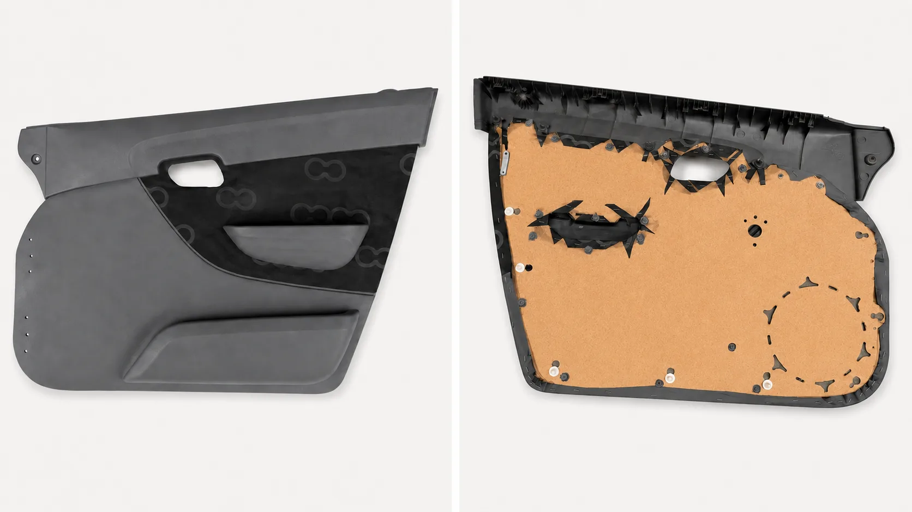
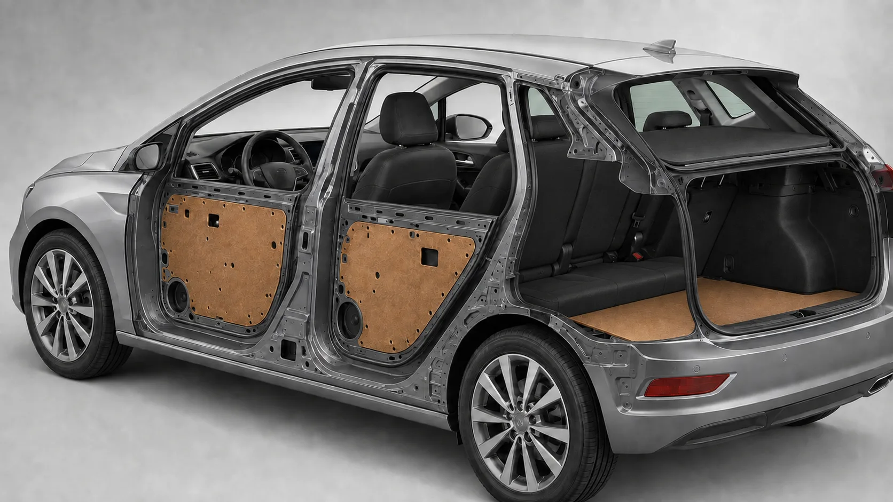
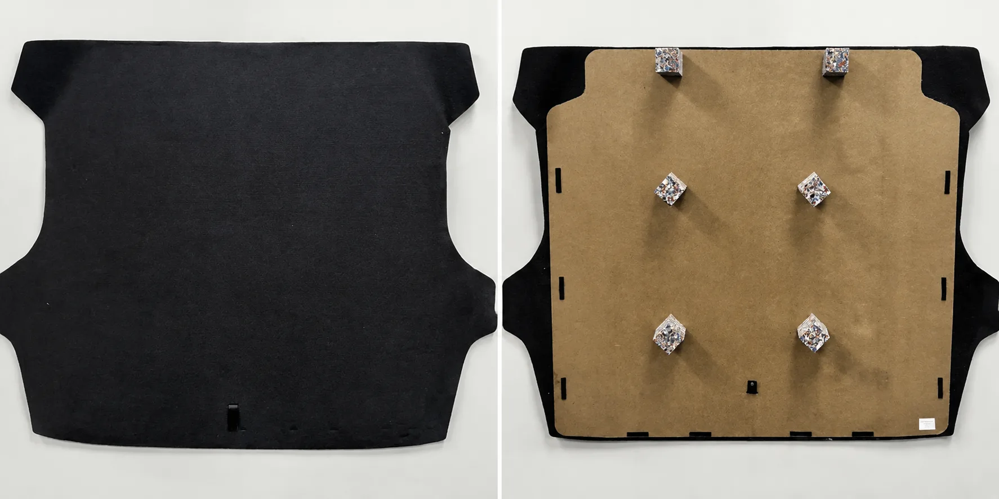
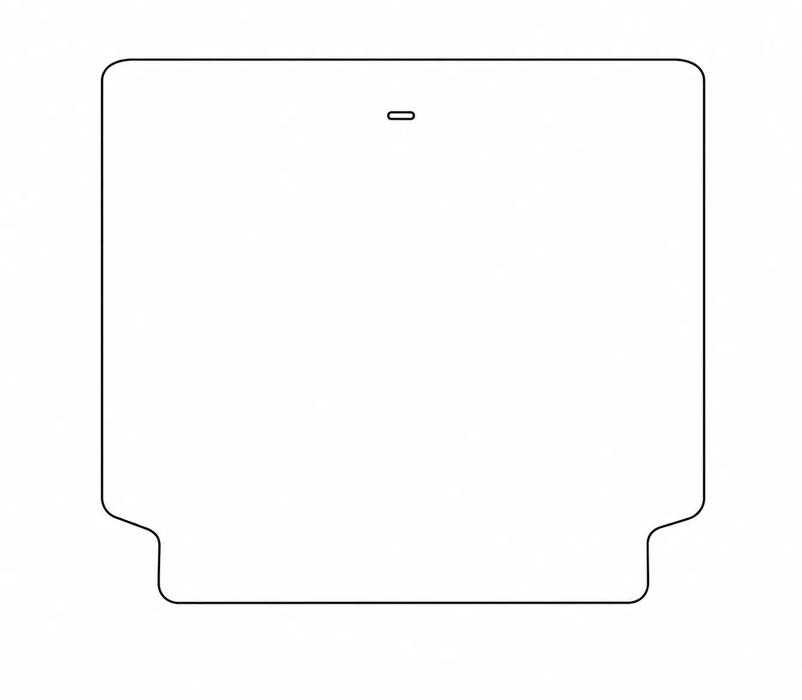
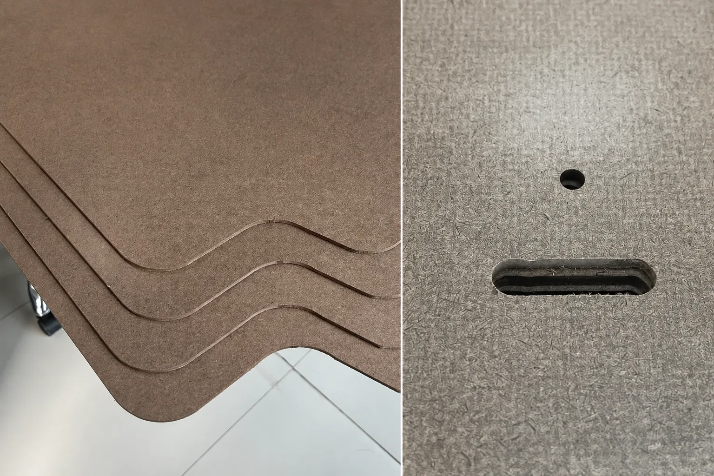

Automotive component
Finished trim component and the hardboard substrate integrated behind the visible surface.
 TRIPLE AHARDBOARD
TRIPLE AHARDBOARD
Automotive interior substrates
A qualification-led page for formed or cut hardboard components supplied to controlled drawings and customer programmes.

Application evidence
Generic car photographs do not help an engineer assess fit. Each published part family needs controlled evidence.

Finished trim component and the hardboard substrate integrated behind the visible surface.

Paired views show the finished face, shaped substrate and mounting features.
A vehicle cutaway communicates representative positions without disclosing a customer programme.
Component construction
The paired views show the carpet-covered finished surface and the reverse side with the shaped hardboard substrate and mounting points.
Simplified drawing
This public-facing schematic communicates the general converted-part shape while withholding controlled dimensions and production details.

Machining details
The close views show repeatable shaped edges and machined attachment features used in converted automotive hardboard components.

Programme inputs
Serial supply requires a released drawing, agreed material baseline, sample qualification and customer-specific evidence.
| Required input | Information to include |
|---|---|
| Part category | Door-trim substrate, rear-seat backboard, luggage-floor component, parcel shelf or other interior part |
| AAF supply form | Raw sheet, cut-to-size or profile-cut hardboard component |
| Board thickness | Per approved drawing; general hardboard range 1.6–6.0 mm |
| Part geometry | Approved drawing with radii, holes, slots and critical dimensions |
| Material baseline | Density, moisture, mechanical and water-response requirements from the applicable AAF specification |
| Programme qualification | Heat, humidity, load, durability, flammability, emissions or restricted-substance tests as required |
| Required evidence | Inspection record, test report and customer-specific approval documents |
Common buying questions
AAF can review raw hardboard sheets, rectangular cut-to-size panels and profile-cut components against an approved drawing and material requirement.
Public examples are customer-neutral. Programme names, vehicle models, proprietary drawings and customer-specific limits are not published.
Provide the part category, released drawing, programme stage, material and test requirements, annual volume, target timing and required approval documents.
Start with a released requirement